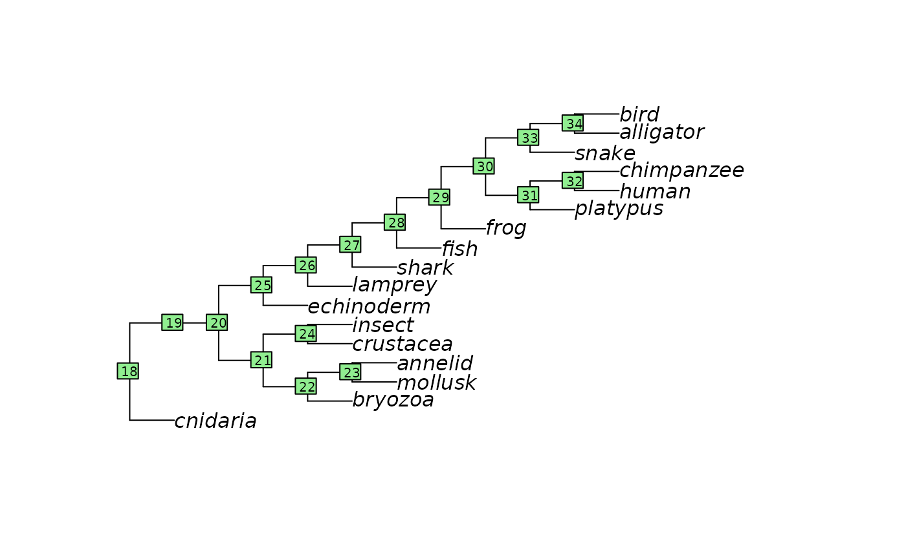

DNA sequence evolution
Matheus Januario, Andressa Viol, and Daniel Rabosky
Jan 2024
Source:vignettes/deeptime_clocks.Rmd
deeptime_clocks.RmdLearning objectives
- Exploring sequence data
- A simple measure of genetic distance
- The Poisson correction
- Building a molecular clock
- Molecular clocks and inferences about deep time
- Jukes-Cantor correction
- The uncertainty of your molecular clock
Introduction
We have encountered many processes that change allele frequency in a population, but today we will study the actual genetic differences among species. We will also learn how to use that genetic information to reconstruct the evolutionary past of lineages with the so-called “molecular clock”. To do that, we will use real data on molecules to estimate the divergence (in numbers of substitutions) between homologous proteins in different organisms.
Homologous sequences, together with information from the fossil record, will be used to “calibrate” the rate at which amino acid substitutions occur during protein evolution. More specifically, given an estimate of the amount of divergence, plus an estimate of the rate at which divergence occurs, we can estimate how much time has passed since divergence.
Exploring sequence data
We have assembled a set of protein sequences from the cytochrome oxidase 1 gene. This gene, often known as CO1 (“see-oh-one”), is a mitochondrial gene that plays a key role in cellular respiration (e.g., the primary aerobic pathway to energy or ATP generation). CO1 contains approximately 513 amino acids and has been used in many studies to construct phylogenetic trees and estimate divergence times between taxa.
We manually downloaded full-length genes of a number of focal taxa from the public database GenBank (more general info about GenBank can be found in Benson et al., 2012). We then aligned the sequences using CLUSTAL (more info in Sievers et al., 2011), a widely-used sequence alignment tool.
Because this dataset is included in our R package, we can access it by simply typing:
data("cytOxidase")Now we can pull out the sequence of a single organism by typing:
cytOxidase["human"]Now, let’s explore our sequences a little.
How many sequences do we have?
length(cytOxidase)## [1] 17What are the organisms in our dataset?
names(cytOxidase)## [1] "cnidaria" "snake" "echinoderm" "mollusk" "alligator"
## [6] "lamprey" "shark" "bird" "frog" "fish"
## [11] "platypus" "human" "chimpanzee" "bryozoa" "annelid"
## [16] "insect" "crustacea"How long is each sequence?
## cnidaria snake echinoderm mollusk alligator lamprey shark
## 513 513 513 513 513 513 513
## bird frog fish platypus human chimpanzee bryozoa
## 513 513 513 513 513 513 513
## annelid insect crustacea
## 513 513 513You can access any particular sequence by typing:
cytOxidase["platypus"]## platypus
## "NRWLFSTNHKDIGTLYLLFGAWAGMAGTALSILIRSELGQPGSLLGDDQIYNVIVTAHAFVMIFFMVMPIMIGGFGNWLVPLMIGAPDMAFPRMNNMSFWLLPPSFLLLLVSSTVEAGAGTGWTVYPPLAGNLAHAGASVDLAIFSLHLAGVSSILGAINFITTIINMKPPAMSQYQTPLFVWSVLITAVLLLLSLPVLAAGITMLLTDRNLNTTFFDPAGGGDPILYQHLFWFFGHPEVYILILPGFGIISHIVTYYSGKKEPFGYMGMVWAMMSIGFLGFIVWAHHMFTVGMDVDTRAYFTSATMIIAIPTGVKVFSWLATLHGGDIKWTPPMLWALGFIFLFTVGGLTGIVLANSSLDIILHDTYYVVAHFHYVLSMGAVFAIMGGFVHWFPLLSGFTLHPTWAKVHFTLMFVGVNLTFFPQHFLGLAGMPRRYSDYPDAYTLWNALSSLGSFVSLTAVMVMIFMIWEAFASKREVLS--VELTTTNIEWLHGC-PPPYHTFEQPVYIKA"You can compute the number of differences by typing:
countSeqDiffs(cytOxidase, "human", "alligator") ## [1] 77Finally, you can get the length of a specific sequence by typing:
nchar(cytOxidase["platypus"])## platypus
## 513A simple measure of genetic distance
As mentioned in class, the simplest genetic distance between two sequences is just the proportion of differences (i.e., the p-distance).
Now, lets focus on these pairs of taxa:
human-bird
human-chimp
human-platypus
human-echinoderm
cnidaria-insect
insect-crustacean
annelid-insect
chimpanzee-insect
chimpanzee-fish
platypus-cnidaria
frog-lamprey
snake-shark
insect-mollusk
bird-alligatorIf you are unfamiliar with creating matrices or named vectors in R, below is a tutorial to walk you through how to do this.
To make a named vector, you will access the names
attribute of a vector with the function names(). You will
assign another vector that contains the names to the names
attribute of your vector like this:
seq_diff_vec <- c(4, 8, 3, 6, 0) # note that these numbers are completely made up
names(seq_diff_vec) <- c("snake-chimp", "human-echinoderm", "alligator-insect",
"chimp-echinoderm", "human-chimp")
seq_diff_vec## snake-chimp human-echinoderm alligator-insect chimp-echinoderm
## 4 8 3 6
## human-chimp
## 0Note that you cannot repeat names, each name must be unique.
As seen above, you now have a vector whose values are labeled with a unique identifier. As you have done many times in these labs, you can also access a particular value within your vector by its unique name using this format:
seq_diff_vec["snake-chimp"]## snake-chimp
## 4To make a matrix, use the handy function matrix(). Say I
wanted to build a matrix that counts differences between 3 pairs:
snake-human, insect-snake, and insect-human. First, I will build a
skeleton matrix to hold this data:
m <- matrix(data = NA, # placeholder value for each matrix's cell will be NA
# (later will be replaced by real data)
nrow = 3, # one row for each taxon group
ncol = 3, # one col for each taxon group
dimnames = list(c("snake", "human", "insect"), # these are the row names
c("snake", "human", "insect")) # these are the column names
)Let’s take a look at our skeleton matrix.
m## snake human insect
## snake NA NA NA
## human NA NA NA
## insect NA NA NALooks good! Now, to fill in the cell values that currently say
NA with data containing the sequence differences between
each pair, I can directly subset the matrix at the row, column, or cell
that I want using base subsetting in R. A very important thing to note
is that this matrix is symmetric, meaning that both the upper and lower
triangles are the same. It is symmetric because there are two cells for
each pair of taxa, but only one value of sequence differences for that
pair. Thus, you may choose to either leave one half of the matrix blank,
or repeat the values.
m[1,] <- c(0, 5, 2) # replacing the entire first row with fake numbers
m[2,] <- c(5, 0, 80) # replacing the entire second row with fake numbers
m[3,] <- c(2, 80, 0) # repalcing the entire third row with fake numbers
m## snake human insect
## snake 0 5 2
## human 5 0 80
## insect 2 80 0Like this, we can manually alter the matrix. You can also do this with a nested loop, though this is more complicated.
The Poisson correction
Here are some extra hints for Q8:
Hint (1): Make sure you have entered your data correctly! A good thing to always do is to make sure the lengths of your vectors are the same:
length(p_dist) # assuming your p-distance vector is named like this
length(poiss_dist) # same as above for the poisson-corrected distanceHint (2): You can add a 1:1 line (perfect correspondence between axes) by typing in the following after the code that creates your scatterplot:
abline(a=0, b=1) # note that the arguments are the parameters of the line equationBuilding a molecular clock
Now, we are going to calibrate a molecular clock and apply it to the distances you have computed above. The rate at which our metaphorical clock “ticks” will be used to compute the expected number of substitutions per million years. Just for reference, here is a phylogeny of all the species in your dataset:

Note that we manually set all branches to have equal lengths in the figure above. What we want now is to make the branches proportional to time.
For our calibration, we are going to use a single fossil to calibrate the age of the most-recent ancestor of humans and birds. Fortunately, there is an extremely useful fossil taxon, Hylonomus known from Nova Scotia, that is thought to be extremely closely related to the common ancestor of birds and mammals. Researchers have used the age of this fossil (312 Ma) to calibrate molecular clocks.
Now, we will use your Poisson-corrected distance between birds and humans and the dating of to estimate the rate of protein evolution (in substitutions per site per million years).
The uncertainty of your molecular clock
Now, we are going to look at how confident we are about our original rate estimate, and what the implications of this is. More specifically, we are going to generate a profile plot of the “log-transformed probability” (in this case, this is the same as the log likelihood, a term you might have heard before) as a function of the substitution rate parameter.
To get the probability of observing a specific number of mutations,
you can use the dpois() function:
# For instance, what is the probability of observing 10 substitutions in a 37-long
# AA sequence after 10 million years of divergence
# if the substitution rate is equal to 0.1 substitutions
# per site per million years?
rate_A <- 0.1
AA_seq_length <- 37
obs_subs <- 10 # amount of substitutions that have occurred
obs_time <- 10 # amount of time that has passed
prob_given_rate_A <- dpois(
x = obs_subs, lambda = obs_time * rate_A * AA_seq_length)
prob_given_rate_A # this is the likelihood## [1] 1.130729e-07
# finally, we take the (natural) log, to get
# the log-likelihood of observing the data
# given the model and the rate value:
log(prob_given_rate_A)## [1] -15.99523
# the questions is, then: what is the likelihood of observing >the same< data
# under different values of substitution rate?Brief introduction to intervals derived from log-likelihood
When we are estimating only a single parameter, likelihood theory shows that any likelihood value of a parameter given data (i.e. ) that satisfies the following inequality:
will provide an estimate of the 95% confidence interval for our parameter value.
References
Benson, D. A., Cavanaugh, M., Clark, K., Karsch-Mizrachi, I., Lipman, D. J., Ostell, J., & Sayers, E. W. (2012). GenBank. Nucleic acids research, 41(D1), D36-D42.
Hedges, S. B., & Kumar, S. (2003). Genomic clocks and evolutionary timescales. TRENDS in Genetics, 19(4), 200-206.
Sievers, F., Wilm, A., Dineen, D., Gibson, T. J., Karplus, K., Li, W., … & Higgins, D. G. (2011). Fast, scalable generation of high‐quality protein multiple sequence alignments using Clustal Omega. Molecular systems biology, 7(1), 539.